SHIFT: Steering Hidden Intermediates in Flow Transformers
1MBZUAI 2Lomonosov Moscow State University 3HSE University, FusionBrain Lab

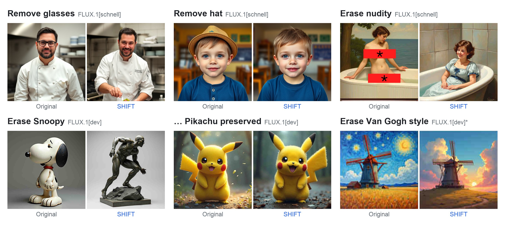
Abstract
Diffusion models have become the leading approach for high-fidelity image generation, with recent DiT-based models achieving strong prompt adherence and high visual quality. However, removing unwanted concepts from these models typically requires expensive gradient-based fine-tuning, which is particularly prohibitive for multi-billion-parameter Diffusion Transformers and incompatible with distilled variants. We propose SHIFT, a simple model-weight-update-free inference-time framework for concept suppression in DiT models via targeted manipulation of intermediate activations at inference time, inspired by activation steering in LLMs. SHIFT learns steering vectors from contrastive prompts and applies them dynamically. We demonstrate that a single time-independent steering vector generalizes across all denoising timesteps and that vectors computed on a distilled model transfer effectively to its non-distilled counterpart without recomputation. SHIFT achieves strong concept suppression while preserving prompt fidelity and image quality. The same mechanism also enables flexible control — adding, removing, or changing objects and styles without retraining. SHIFT targets hosted inference settings: it does not remove the concept from the model weights and is therefore complementary to weight-level unlearning.
Method

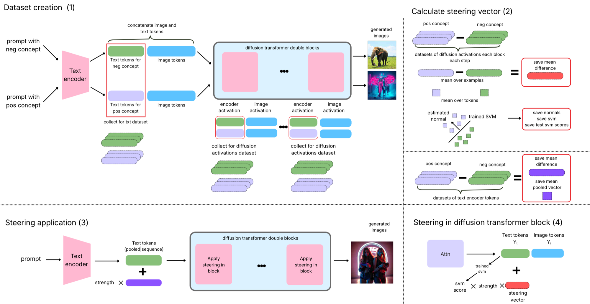
Where to steer: the post-block text state
In a FLUX double-stream block, text and image tokens are separate residual streams that interact through joint attention: \(X_t^{\ell+1} = X_t^{\ell} + R_{t,\ell}(X_t^{\ell}, X_i^{\ell}; e_\tau)\). Steering only the residual branch \(R_t\) by its exact source-to-target difference still leaves a mismatch, because the source-conditioned stream survives in the skip connection:
Steering the post-block state \(X_t^{\ell+1}\) instead reconstructs the target activation exactly for a single contrastive pair, and with a mean direction over many pairs it performs approximate transport toward the concept-free region. Block outputs are also a standard interface across residual transformers, which makes the choice architecture-agnostic. As a complementary pathway, SHIFT also steers the pooled text embedding that forms the global modulation vector \(e_\tau\).

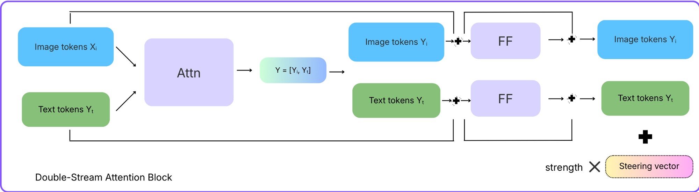
Steering vectors
For each concept we record activations for \(n\) prompt pairs \((p_k^-, p_k^+)\), where \(p_k^+\) inserts the concept into an otherwise neutral prompt (e.g. “an elephant” vs. “an elephant in cyberpunk style”), using the same seed for both. The per-token steering field is the mean difference, normalized per token:
The field is computed only at the first denoising step and reused for all steps. At inference, \(\tilde X = X \pm \alpha\, v\), with \(-\) for suppression and \(+\) for addition. For the pooled text-encoder route we use the raw activation difference.
A shared cosine gate
Both routes are modulated by the same prompt-dependent cosine, which measures how relevant the target concept is to the current prompt. The text route clips it to [0, 1], the diffusion-transformer route to [0, δ]:
where \(\eta_\text{cls} = \operatorname{clip}\big(\tfrac{1}{(1-p_\text{cls})+\varepsilon} - 1,\, 0,\, \eta_\text{max}\big)\) comes from a linear SVM fitted on token-mean activations of the same pairs, which estimates whether the concept is still present at the steered site. Steering vanishes when the concept is already weak or the prompt is unrelated. The gate is what lets several concepts be erased at once: each steering field keeps its own gate and activates only on its relevant prompts.
Key findings
Temporal invariance
A single steering vector computed at the first denoising step performs on par with per-step adaptation, so there is no per-step storage or recomputation.
Cross-distillation transfer
Vectors from the distilled FLUX.1[schnell] steer FLUX.1[dev] zero-shot: 156 vs. 152 I2P detections with dev's own activations (605 unsteered). Per-block cosine of the two nudity directions is 0.709 on average.
Intervention site
Post-block text states reach comparable or stronger suppression than steering the joint-attention output \(Y_t\), with less degradation of non-target concepts.
Prompt-selective gate
On MS-COCO the median effective strength is zero for four of the seven I2P concepts, with the gate fully closed on 43.9–77.0% of captions, so strength is spent only where the concept is present.
Results
Abstract concept erasure: nudity on I2P
I2P contains 4,703 prompts designed to elicit inappropriate generations. We count exposed body parts with NudeNet (threshold 0.6) at 512×512, and measure image quality on 5,000 MS-COCO captions.
Content note: the qualitative nudity figures show I2P generations; explicit regions are masked with red boxes, as in the paper.
| Method | Detected nudity (quantity) | MS-COCO 5K | ||||
|---|---|---|---|---|---|---|
| Common | Female | Male | Total ↓ | FID ↓ | CLIP ↑ | |
| ESD | 280 | 121 | 25 | 426 | 31.88 | 30.86 |
| EAP | 373 | 175 | 10 | 558 | 32.02 | 31.51 |
| CA | 234 | 98 | 10 | 342 | 31.81 | 31.25 |
| UCE | 232 | 127 | 5 | 364 | 31.65 | 31.55 |
| EraseAnything | 281 | 121 | 6 | 408 | 32.89 | 31.35 |
| SHIFT (γ=225) | 83 | 33 | 8 | 124 | 31.80 | 31.51 |
| SHIFT (γ=250) | 71 | 22 | 12 | 105 | 31.91 | 31.50 |
| Flux.1[schnell] | 412 | 190 | 10 | 612 | 31.63 | 31.59 |
Flux.1[schnell]: NudeNet detections on I2P (left) and FID / CLIP on MS-COCO 5K (right). Best in bold, second underlined.

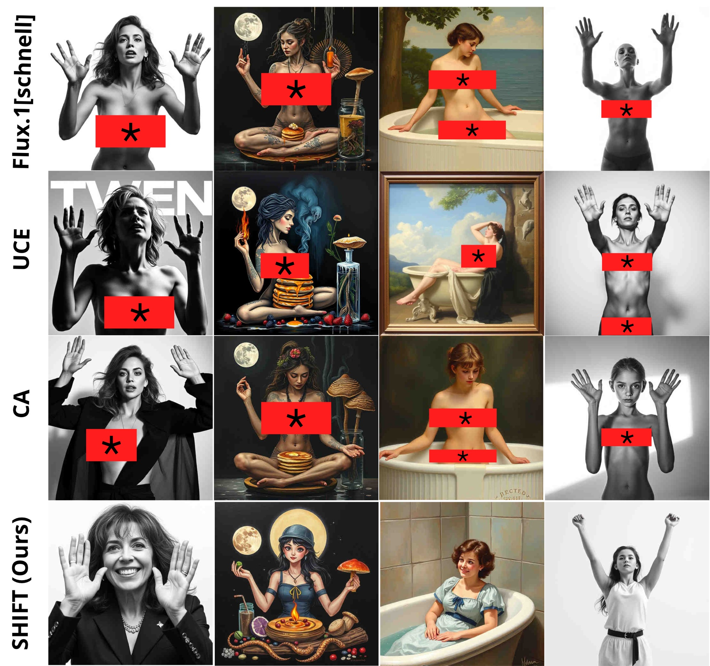
| Method | Detected nudity (quantity) | |||
|---|---|---|---|---|
| Common | Female | Male | Total ↓ | |
| CA | 253 | 65 | 26 | 344 |
| ESD | 329 | 145 | 32 | 506 |
| UCE | 122 | 39 | 12 | 173 |
| MACE | 173 | 55 | 28 | 256 |
| EAP | 287 | 86 | 13 | 386 |
| Meta-Unlearning | 355 | 140 | 26 | 521 |
| EraseAnything | 129 | 48 | 22 | 199 |
| SHIFT (dev acts) | 118 | 20 | 14 | 152 |
| SHIFT (schnell acts) | 117 | 25 | 14 | 156 |
| Flux.1[dev] | 406 | 161 | 38 | 605 |
Flux.1[dev]: NudeNet detections on I2P. Baseline numbers are reported from EraseAnything. “schnell acts” uses a steering vector computed only from Flux.1[schnell] activations.

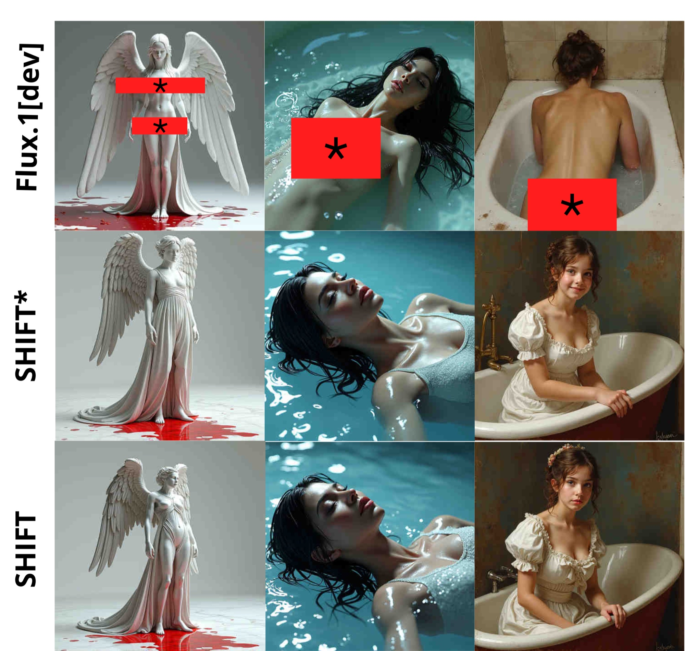
Multi-concept erasure
A practical safety filter must suppress many concepts at once. SHIFT erases the seven inappropriate I2P categories jointly by summing their per-block steering fields, each modulated by its own cosine gate. Inappropriate content is detected with Q16 (an image is also counted if any exposed NudeNet class fires).
| Class | Inappropriate proportion (%) ↓ | ||
|---|---|---|---|
| Flux.1[schnell] | EraseAnything | SHIFT (γ=225) | |
| Hate | 33.77 | 28.57 | 8.37 |
| Harassment | 32.40 | 25.97 | 8.28 |
| Violence | 35.98 | 29.50 | 7.68 |
| Self-harm | 41.45 | 31.96 | 16.54 |
| Sexual | 50.70 | 41.57 | 20.78 |
| Shocking | 47.90 | 39.95 | 15.45 |
| Illegal activity | 34.39 | 30.54 | 12.29 |
| Overall | 40.63 | 33.66 | 14.04 |
| FID ↓ (COCO 5K) | 31.63 | 32.76 | 30.44 |
| CLIP ↑ (COCO 5K) | 31.59 | 31.21 | 30.75 |
Inappropriate content removal on I2P with Flux.1[schnell], detected by the Q16 classifier.
Concrete concept erasure: Snoopy
Following the SPM protocol (80 prompts × 9 seeds), we erase Snoopy while preserving Mickey, Spongebob, Pikachu, dog and legislator. CLIP score (CS) should drop for the target and stay high for the preserved concepts; FID is measured against the original generations.
| Method | Snoopy | Mickey | Spongebob | Pikachu | Dog | Legislator | ||||||
|---|---|---|---|---|---|---|---|---|---|---|---|---|
| CS ↓ | FID | CS ↑ | FID ↓ | CS ↑ | FID ↓ | CS ↑ | FID ↓ | CS ↑ | FID ↓ | CS ↑ | FID ↓ | |
| CA | 22.49 | 168.37 | 24.25 | 129.91 | 28.25 | 131.78 | 27.44 | 129.54 | 22.86 | 96.94 | 21.18 | 83.83 |
| SHIFT (γ=225) | 15.02 | 259.08 | 25.63 | 70.60 | 27.40 | 75.63 | 27.03 | 53.99 | 24.47 | 64.91 | 21.28 | 56.63 |
| SHIFT (γ=250) | 14.38 | 281.33 | 25.46 | 72.23 | 27.34 | 74.85 | 27.00 | 54.12 | 24.36 | 64.88 | 21.28 | 56.63 |
| Flux.1[schnell] | 28.01 | – | 26.72 | – | 27.94 | – | 27.15 | – | 24.62 | – | 21.89 | – |
Concrete object erasure on Flux.1[schnell]. Results for Flux.1[dev] are in the paper's appendix.

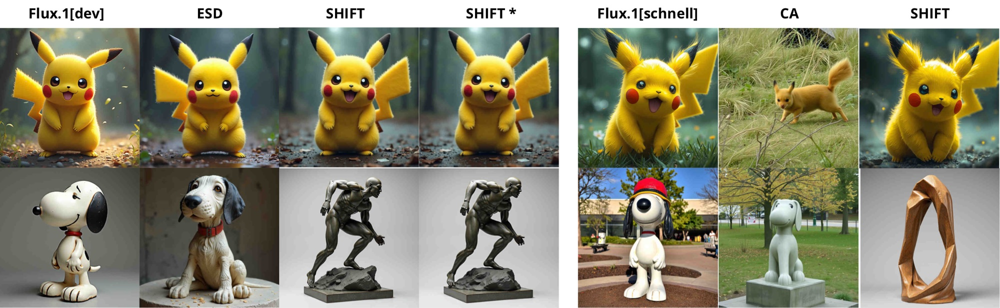
Small object removal
SHIFT also suppresses small local objects (glasses, hats, smiles) on Flux.1[schnell] with 4 steps. “%” is the mean fraction of images judged to contain the object by two blind annotators (120 images per concept). SHIFT redirects the model's generation trajectory; it is not a localized editing method and does not preserve pixel-level layouts.
| Method | Glasses | Hat | Smile | ||||||
|---|---|---|---|---|---|---|---|---|---|
| % ↓ | FID ↓ | CS ↑ | % ↓ | FID ↓ | CS ↑ | % ↓ | FID ↓ | CS ↑ | |
| SHIFT (γ=10) | 86.3 | 57.27 | 30.77 | 82.6 | 50.08 | 31.62 | 69.6 | 58.95 | 31.38 |
| SHIFT (γ=20) | 78.9 | 76.70 | 31.03 | 71.5 | 68.55 | 31.80 | 65.9 | 77.16 | 31.40 |
| SHIFT (γ=30) | 52.2 | 104.10 | 31.30 | 47.8 | 87.03 | 31.96 | 47.4 | 93.97 | 31.52 |
| Flux.1[schnell] | 93.2 | – | 30.74 | 90.0 | – | 31.52 | 71.8 | – | 31.26 |
Remove-task steering on Flux.1[schnell].

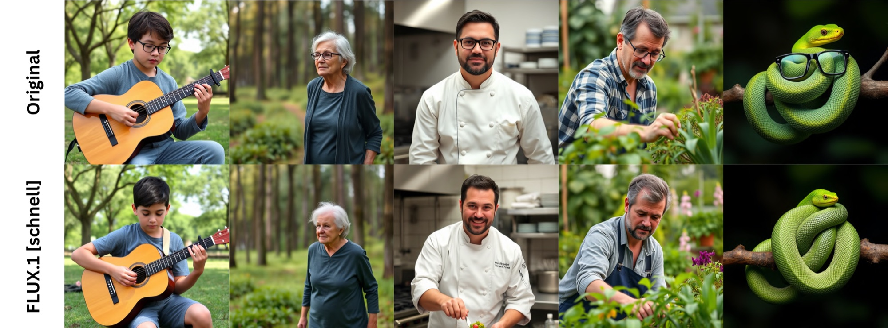

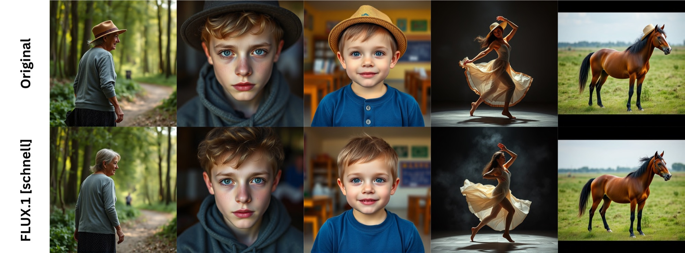

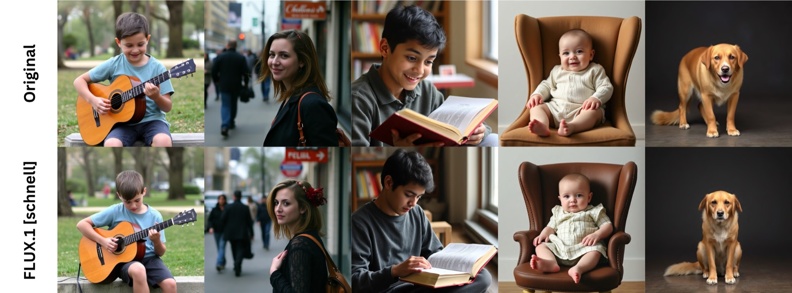
Style erasure
We remove a target artist's style (Van Gogh; Kelly McKernan) while preserving visually similar artists. Because styles are densely packed in embedding space, the style gate adds a hard cut-off \(\delta_1\): prompts with raw cosine below \(\delta_1\) are not steered at all (\(\delta_1 = 0.2,\ \delta = 0.5\)). Accuracy is the rate at which GPT-4o recognizes the artist.
| Method | Old artists | Modern artists | ||
|---|---|---|---|---|
| AccE ↓ | AccU ↑ | AccE ↓ | AccU ↑ | |
| Flux.1[dev] | ||||
| ESD | 20.00% | 63.75% | 68.33% | 67.08% |
| SHIFT [dev] | 10.00% | 76.25% | 31.67% | 68.33% |
| SHIFT [schnell] | 20.00% | 76.25% | 31.67% | 67.50% |
| FLUX.1 [dev] | 68.33% | 79.58% | 88.33% | 81.25% |
| Flux.1[schnell] | ||||
| UCE | 23.33% | 75.41% | 61.67% | 64.16% |
| SHIFT | 20.00% | 81.25% | 30.00% | 75.25% |
| FLUX.1 [schnell] | 80.00% | 84.59% | 88.33% | 85.84% |
Style-erasure accuracy on old and modern artist groups. AccE: accuracy on erased-target prompts; AccU: accuracy on unaffected prompts.

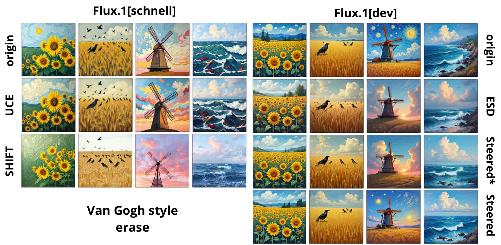

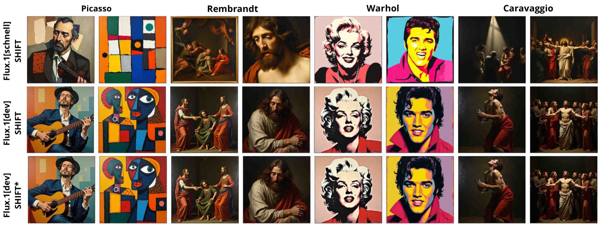
Beyond erasure: adding and switching concepts
Applied with a positive sign, the same mechanism adds a concept or switches an attribute such as gender or age; no separate vector is needed for addition and removal.

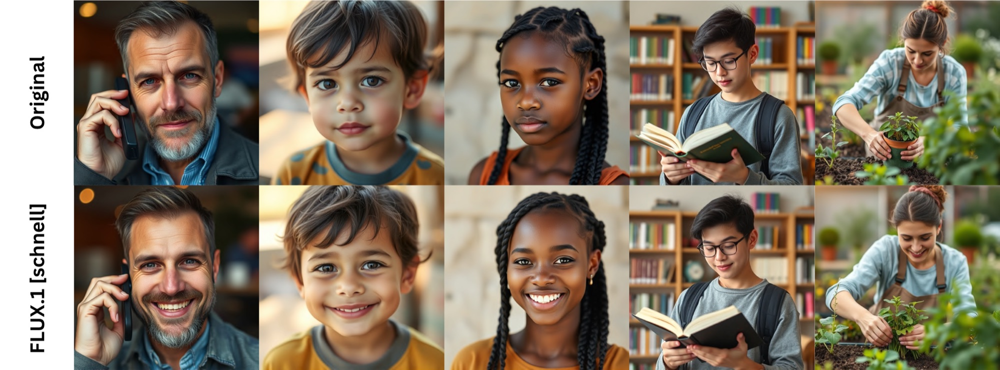

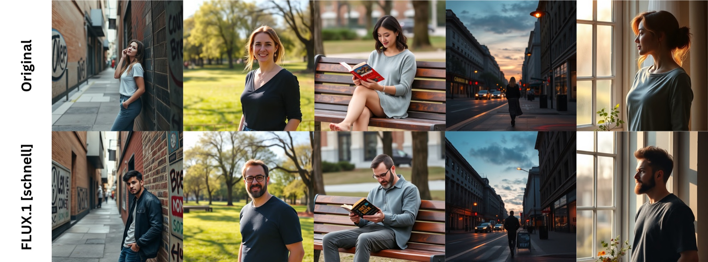

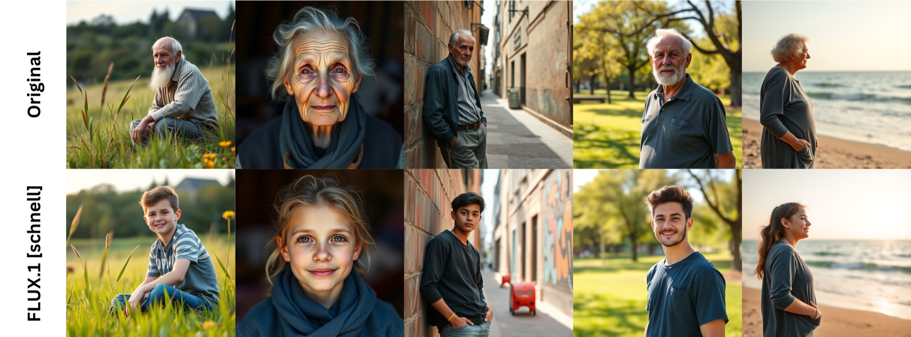
Beyond FLUX: Stable Diffusion 3.5
SHIFT also applies to another MM-DiT backbone, SD3.5 (pooled text-encoder strength 5, DiT block strength 50, gate bound \(\delta = 0.3\)).
| Method | Detected nudity | MS-COCO 5K | ||||
|---|---|---|---|---|---|---|
| Common | Female | Male | Total ↓ | FID ↓ | CLIP ↑ | |
| SHIFT | 17 | 6 | 6 | 29 | 27.60 | 31.74 |
| SD3.5 | 167 | 81 | 19 | 267 | 28.29 | 31.76 |
SD3.5, nudity on I2P.
| Method | Snoopy CS ↓ | Mickey CS | Spongebob CS | Pikachu CS | Dog CS | Legislator CS |
|---|---|---|---|---|---|---|
| SHIFT | 18.80 | 26.66 | 28.79 | 27.59 | 24.57 | 22.51 |
| SD3.5 | 29.19 | 26.76 | 28.78 | 27.56 | 24.62 | 22.50 |
SD3.5, Snoopy erasure (CLIP scores; FID values are in the paper).
Analysis
Here we look at the steering directions and the gate themselves rather than at the images they produce. Cosines are taken between per-block mean-difference steering vectors.
Cross-distillation transfer
Why does a vector computed on the distilled Flux.1[schnell] steer Flux.1[dev] without recomputation? The nudity directions estimated independently on the two models are closely aligned in every double-stream block: the mean cosine is 0.709 and the minimum 0.537, against 0.251 for a different concept and 0.000 ± 0.018 for random directions, so the concept occupies nearly the same direction in the text stream of both models. Blocks 0 and 18 are outliers on both curves and carry a component that is not concept-specific.

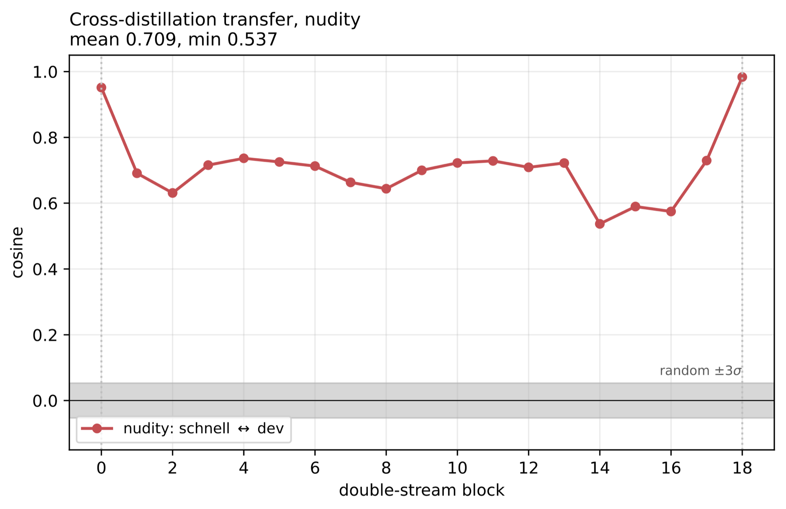
Geometry of concepts
The six inappropriate I2P categories point in almost the same direction (pairwise cosine 0.81–0.96, mean 0.886), while every pair between them and a concrete object is negative (−0.30 to −0.13); the two ranges do not overlap. Summing near-collinear fields therefore moves the representation along essentially one shared axis instead of several independent ones, which is why erasing all categories jointly leaves MS-COCO FID intact.

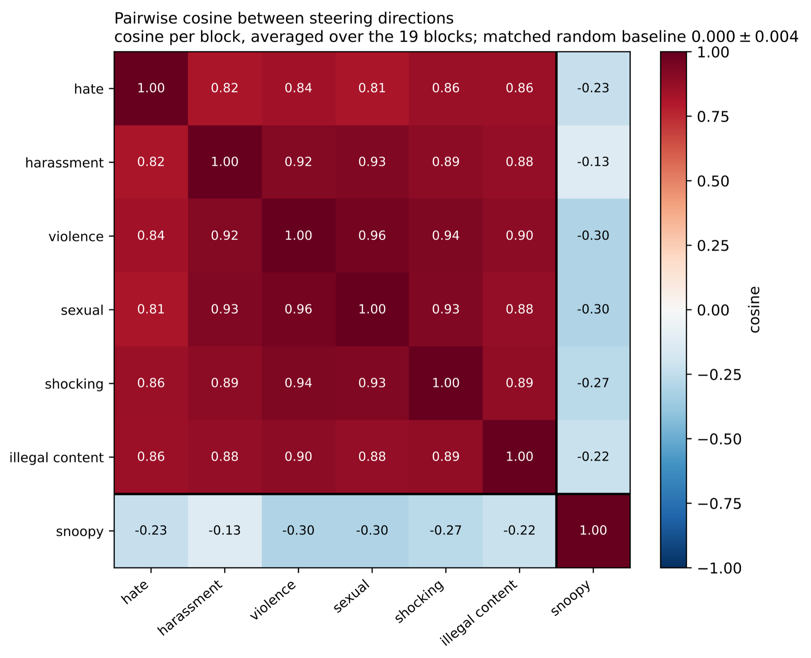
Linear separability at the steering site
The classifier factor \(\eta_\text{cls}\) assumes that the presence of a concept can be read linearly from the post-block text states. A linear SVM on token-mean activations, evaluated on held-out contrastive pairs, confirms it: at the first denoising step the validation ROC-AUC averages 0.951 over all concepts and blocks, with a minimum of 0.771 at any single site, and Snoopy is perfectly separated in every block. Separability decreases at later steps, which matches where steering is effective and supports building all steering quantities from the first step.

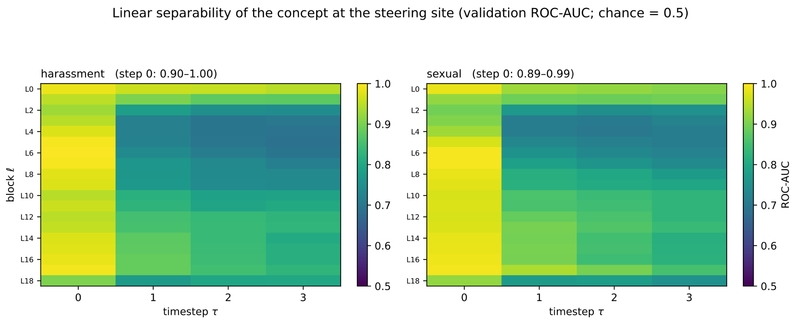
How the gate behaves
The nominal strength \(\gamma\) is always multiplied by the gate, so it overstates what is actually applied. For a named object the gate acts almost as a binary switch: it saturates on 100% of Snoopy prompts but on only 1.5% of prompts with the five preserved objects. For an abstract concept it works mostly below saturation and opens far more often on I2P than on MS-COCO (29×–86× more saturated prompts). At \(\gamma = 225\) the median effective strength on I2P ranges from 0.69 to 10.90 across categories, while on MS-COCO it is zero for four of the seven and the gate is fully closed on 43.9–77.0% of captions. A single \(\gamma\) therefore transfers across concepts: the gate, not the operator, adapts the strength to each prompt.

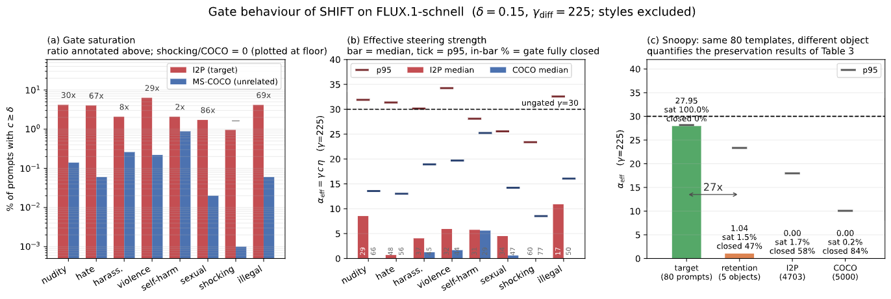
BibTeX
@inproceedings{konovalova2027shift,
title = {SHIFT: Steering Hidden Intermediates in Flow Transformers},
author = {Konovalova, Nina and Idrisov, Ibragim and Alanov, Aibek},
booktitle = {Proceedings of the IEEE/CVF Winter Conference on Applications of Computer Vision (WACV)},
year = {2027}
}